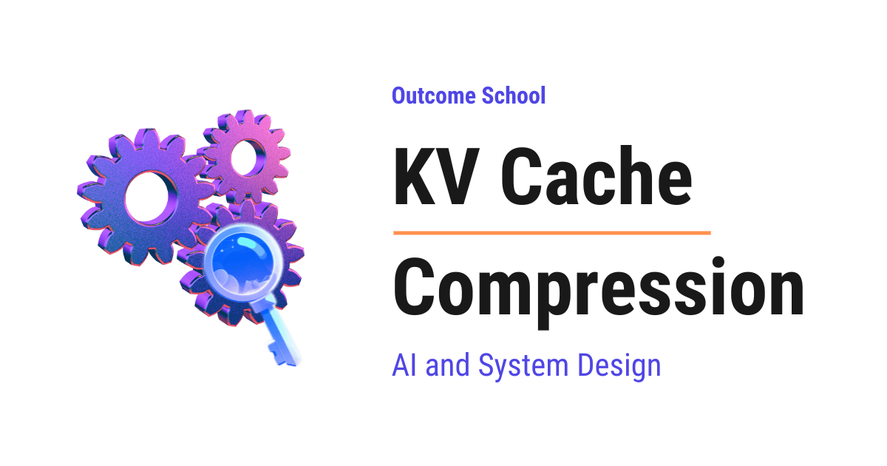

KV cache是模型用来「记住」对话的内存：每写一个新token，它都要回看此前所有token的Key和Value。问题是这份缓存会随对话变长和并发用户变多而快速膨胀，直接吃掉GPU显存，还拖慢生成速度。
这篇文章把KV cache压缩的四类方法讲清楚：量化、Token驱逐、跨头共享K/V、低秩压缩，并给出各自的压缩比、质量代价与适用场景。
LLM（大语言模型）是能读文本、写文本的AI模型，ChatGPT、Claude、Gemini都基于它。模型通过阅读互联网上的海量文本学习，这个过程叫训练；训练完成后我们提问，它写出回答。
最要紧的一点是：模型不会一次写完整个回答，而是一小片一小片地写，这一小片叫token（可以粗略理解为一个词）。比如问「法国的首都是哪里」，它会先写「The」，然后回看目前所有内容写下「capital」，再回看一遍写「of」，接着「France」「is」「Paris」。
也就是说，每写一个新token，模型都得回看此前所有token。这个回看动作，就由Attention完成。
Attention是模型判断「哪些历史token对写下一个token重要」的方式，简单说就是回看并挑出重点。比如模型在写「The dog was tired, so it went to sleep.」时遇到「it」，它需要知道「it」指的是「the dog」，于是会给「dog」更高的注意力，其它词则更低。
那它是怎么做到的？每个token会被转换成三样东西：Query（当前token在找什么）、Key（每个历史token能提供什么，像标签）、Value（每个历史token实际携带的信息）。这三样都只是一串数字，在AI里叫作向量。
可以用图书馆打比方：我们脑子里的问题是Query，每本书书脊上的标题是Key，书里的内容是Value。我们拿问题和每本书的标题比对，标题匹配得好的书获得更多注意力，然后阅读那些书的内容并汇总所学。Attention做的正是这件事：新token的Query与此前每个token的Key比对，按匹配程度把Value组合起来传给下一步。
还有一点：模型不是只做一次Attention。它有很多层叠在一起，每层又有多个注意力头，每个头像一位独立的读者，有的关注语法、有的关注人名、有的负责判断「it」指代谁。
问题来了：每写一个新token，模型都需要此前所有token的Key和Value。假设已经写了100个token、正在写第101个，它需要前100个token的Key和Value；如果不做任何记忆，模型会把100个token的Key和Value重新算一遍，到第102个token时再把101个重算一遍，如此反复。
这是巨大的浪费：一个token的Key和Value一旦算出来就不会再变，为什么要反复计算？于是KV Cache出场了。Cache就是一块存储，把算过的东西存下来避免重算；KV Cache就是模型存放此前所有token的Key与Value的内存。有了它，写第101个token时只需计算最新token的Key和Value并追加到缓存，其余全部从缓存里读。
但这里有个陷阱：这份缓存会随每一个token增长，而且长得非常快。
先补两个小知识：bit是计算机最小的内存单位，非0即1；8个bit是1个byte。

取一个接近Llama 2真实配置的模型：32层、每层32个注意力头、每个头的Key向量与Value向量各有128个数字、每个数字用16 bit（即2 byte）存储。先算一个token要占多少缓存：一个层的一个头存128个Key数字加128个Value数字，共256个；32个头就是8192个；32层就是262144个数字；每个数字2 byte，于是一个token需要524288 byte，也就是0.5 MB。
layers = 32
heads = 32
head_dim = 128
bytes_per_number = 2
# Key and Value, so multiply by 2
per_token = 2 * layers * heads * head_dim * bytes_per_number
print(per_token / (1024 * 1024)) # 0.5 MB这里把层数、头数、每个头的大小与每个数字的字节数相乘，最前面乘2是因为Key和Value都要存。
0.5 MB一个token听起来不多，但把全局算一下：用户进行4000 token的对话，就是4000乘0.5 MB，等于2 GB；用户粘贴一份10万token的长文档，就是50 GB，而这只是一个用户的缓存。模型跑在GPU上，GPU显存通常是24 GB到80 GB，其中很大一部分还要留给模型本身；如果同一块GPU上有100个用户同时对话、每人一份缓存，所需内存远超任何GPU的容量。
而且不止是内存问题：每生成一个新token，模型都要把整份缓存从内存里读一遍，缓存越大读取越久，生成就越慢。
解决这个问题有两条路：一条是别再浪费已有内存（比如PagedAttention的做法），另一条是把缓存本身变小，也就是下面要讲的KV Cache压缩。
KV Cache压缩是一组让缓存变小、同时尽量保持模型输出质量不变的技术。说白了，就是用更少的空间存下同样的对话记忆。
做法有几种：有些可以直接用在已有模型上，有些必须在训练之前就设计进模型里。下面从最简单的开始，逐一说明。
量化的意思是：缓存里的每个数字用更少的比特来存。举个例子，一个人的身高可以写成175.4837 cm，也可以写成175 cm；后者占用更少，对多数用途也够用。量化做的就是这件事：正常情况下KV cache里每个数字用16 bit存储，量化后可以存成8 bit甚至4 bit。
举个具体例子。假设Key向量里有这么几个数字：
[0.31, -0.72, 0.05, 0.98]要压到更少的比特，先找出最大的值0.98，然后把每个数字缩放到 −127到127这个能用8 bit表示的小整数范围内。
values = [0.31, -0.72, 0.05, 0.98]
scale = max(abs(v) for v in values) / 127
quantized = [round(v / scale) for v in values]
print(quantized) # [40, -93, 6, 127]这里把每个数字除以缩放系数再四舍五入到最近的整数，于是每个数字都变成了能用8 bit而不是16 bit表示的小整数；只需要额外单独存下这个缩放系数，需要时就能近似还原原来的数值。
从16 bit到8 bit，缓存变成原来的一半；从16 bit到4 bit，缓存变成原来的四分之一。
优点：添加起来非常简单，不丢弃任何token，质量损失很小。缺点：低于4 bit之后舍入误差会变大，模型回答开始变差，所以能压到什么程度是有下限的。
还有一点值得注意：Key和Value的表现并不一样。在Key中，少数位置总是携带特别大的数值，普通的四舍五入处理不好它们，因此像KIVI这类更好的方法会对Key和Value采用略有不同的量化方式，把误差压小。不必纠结细节，只要记住：为了效果最好，Key和Value要区别对待。
这个方法的问题是：即便用4 bit，缓存仍然会随每个token增长，超长对话下依然太大。
Token驱逐的意思是：把不重要的token的Key和Value丢掉。Eviction就是「踢出去」，这里是把不重要的token从缓存里踢出去。
打个比方：读一本500页的小说，我们不会记住每一句话，而是记住重要的角色、重要的事件，以及刚读过的最后几页，其余的都忘掉，但依然完全理解这个故事。同样的道理，并不是每个历史token对写下一个token都同等重要：模型计算Attention时，大部分注意力集中在少数token上，其余token几乎得不到注意力。既然如此，为什么还要把它们留在缓存里？
那怎么知道哪些token重要？答案就在Attention本身：模型每写一个新token，都会算出每个历史token获得了多少注意力。我们可以为每个token累计这个数值，累计最高的就是重要token，也就是所谓「heavy hitters」（高频命中者），这正是H2O（Heavy Hitter Oracle）技术做的事。
规则因此很简单：固定一个预算，比如1000个token；永远保留最近的token，因为最近的上下文几乎总是重要的；在更早的token里只保留heavy hitters；其余的丢掉。这样无论对话多长，缓存都不会超过1000个token。
但这里有个很有意思的发现：文本最开头的几个token总是获得大量注意力，无论它们本身是什么，哪怕第一个token只是一个没有意义的起始标记。为什么？因为Attention就像把100% 分配给所有历史token，总和必须永远是100%；当没有任何历史token真正有用时，模型也得把这份注意力放到某处，于是它学会了倾倒给第一个token：第一个token就像一个「水槽」，接收那些不需要的注意力，这就是Attention Sink。
如果把这个token丢掉，模型输出会变得毫无意义，这是StreamingLLM技术发现的。于是最终规则是：永远保留最前面几个token、永远保留最近的token，heavy hitters从中间选。
优点：缓存大小固定，与对话长度无关，这是唯一真正解决「无上限增长」问题的方法。缺点：token一旦丢掉就永远没了；如果用户之后问到被驱逐token里的内容，模型就记不起来，这是真实的信息损失。它适合聊天、摘要一类任务，但不适合需要精确回忆的任务，比如「找出第40页提到的电话号码」。
前面几种都是在模型训练完成之后压缩缓存，这个方法不同：它在训练之前就改变模型本身的设计。
回想一下：每一层有很多注意力头，每个头都有自己的Key和Value；在例子中，32个头意味着每层有32套Key和Value。问题是，这32个头真的都需要各自独立的Key和Value吗？答案是不需要。研究发现很多头可以共享同一套Key和Value而效果依然很好，只有Query需要每个头各自保留。
再用图书馆打比方：32个学生各自带着不同的问题（Query）走进图书馆，但图书馆不需要为每本书准备32份副本，所有学生看的是同一个书架、同样的书名与内容，区别只在各自的问题。
具体有两种做法。多查询注意力（MQA）：所有头共享一套Key和Value，例子中32个头共用1套，缓存缩小32倍。分组查询注意力（GQA）：把头分组，每组共享一套Key和Value，例子中32个头分成8组就是8套而不是32套，缓存缩小4倍。MQA压得更狠但会损失一些质量，GQA是折中方案，拿到了大部分内存节省而几乎没有质量损失，这也是Llama 3、Mistral、Gemma等现代模型普遍采用GQA的原因。
优点：不丢弃任何token、没有舍入误差；节省是内置在模型里的，运行时不需要额外工作。缺点：必须在训练模型之前决定，无法在不重训的前提下用于已有模型；而且缓存仍会随每个token增长，只是速度变慢。
低秩压缩的意思是：只存Key和Value的一个小型压缩版本，需要时再展开还原。低秩意味着同样的信息可以用更少的数字承载。
打个比方：要给朋友发一张大照片，可以先把照片打包成压缩文件发过去，朋友想看时再解压；压缩文件占空间更小，照片本身几乎不变。这里模型不再为每个token存完整的Key和Value，而是存一个称为「潜向量」（latent vector）的小向量：latent就是「隐藏」的意思，它是Key与Value的一种隐藏压缩形式；需要Key和Value时，模型用训练中学到的一小组数字把潜向量展开回来。
看具体数字：例子中每个头为Key存128个数字、为Value存128个数字，32个头就是每层每token 8192个数字。用低秩压缩后，模型每层每token只存一个比如512个数字的潜向量，小了16倍。这正是多头潜在注意力（MLA）做的事，它由DeepSeek在DeepSeek-V2中提出，DeepSeek-V3也在使用。
你可能会问：先压缩再展开，难道不会损失质量？这正是这个方法的美妙之处：模型从一开始就带着这种压缩一起训练，于是它学会只把有用的信息放进潜向量，重要的东西并不会丢失。
优点：内存节省巨大，不丢弃任何token，质量与完整Attention相当、某些情况下甚至更好。缺点：和GQA一样必须在训练前就设计进模型，无法用于已有模型；而且模型需要一点额外计算来展开潜向量。
DeepSeek-V4把这一思路推得更远：把连续多个token合并成一条压缩后的缓存条目。
还有一点值得注意：这些方法并不是互相竞争，而是可以叠加使用。一个模型可以在设计上采用MLA，再对潜向量做量化，然后再叠加token驱逐。下表汇总了它们的差异。
| 量化 | Token驱逐 | 跨头共享 | 低秩压缩 | |
|---|---|---|---|---|
| 省内存方式 | 每个数字用更少比特 | 少存一些token | 每层更少的Key/Value | 每个token更小的向量 |
| 需要重训 | 否 | 否 | 是 | 是 |
| 是否丢token | 否 | 是 | 否 | 否 |
| 典型压缩比 | 2到4倍 | 固定缓存大小 | 4到8倍 | 10倍以上 |
| 质量损失 | 很小 | 取决于任务 | 很小 | 几乎没有 |
| 代表方法 | KIVI | H2O、StreamingLLM | GQA、MQA | MLA（DeepSeek） |
按使用场景来选：如果在跑一个已有模型、想快速省内存，用量化，它最容易加。如果有超长对话、或者文本源源不断没有尽头，用带Attention Sink的Token驱逐。如果需要精确回忆长文档里的每一处内容，不要用Token驱逐，用量化，或者用内置GQA或MLA的模型。如果要训练一个新模型，从第一天起就在设计里加入GQA或MLA。如果想要最大程度的节省，就把它们组合起来：先选一个带MLA或GQA的模型，再对缓存做量化，最后在任务允许的情况下做驱逐。
参考：https://outcomeschool.com/blog/kv-cache-compression